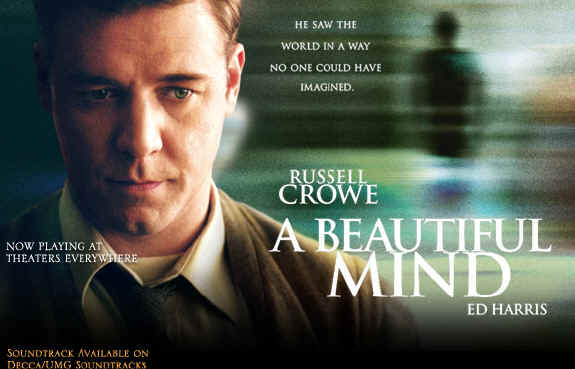
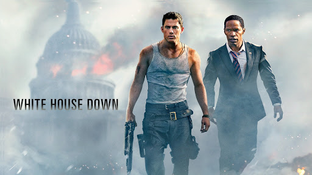
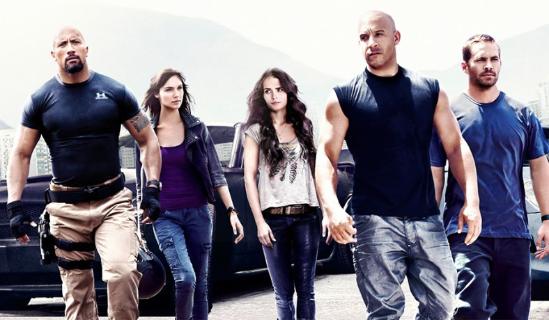
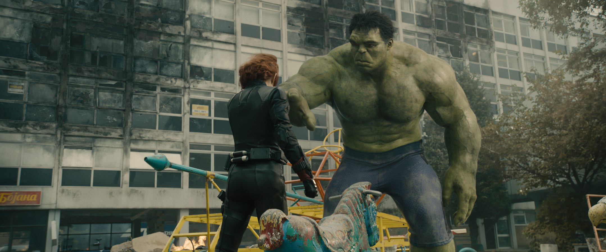

Beautifull Mind
The film opened in the United States cinemas on December 21, 2001
Genres: Biography, Drama
Hover over the image to see the effect.

A Beautiful Mind is a 2001 American biographical drama film based on the life of John Nash, a Nobel Laureate in Economics. The film was directed by Ron Howard, from a screenplay written by Akiva Goldsman. It was inspired by a bestselling, Pulitzer Prize-nominated 1998 book of the same name by Sylvia Nasar. The film stars Russell Crowe, along with Ed Harris, Jennifer Connelly, Paul Bettany, Adam Goldberg, Judd Hirsch, Josh Lucas, Anthony Rapp, and Christopher Plummer in supporting roles. The story begins in Nash's days as a graduate student at Princeton University. Early in the film, Nash begins to develop paranoid schizophrenia and endures delusional episodes while watching the burden his condition brings on wife Alicia and friends.
White House Down
The film was released on June 28, 2013 and grossed US$205 million worldwide
Genre(s): Action, Drama, Thriller.
Hover over the image to see the effect.

White House Down is a 2013 American political action thriller film directed by Roland Emmerich about an assault on the White House by a paramilitary group and the Capitol Police Officer who tries to stop them. The film's screenplay is by James Vanderbilt, and it stars Channing Tatum and Jamie Foxx, with Maggie Gyllenhaal, James Woods, Jason Clarke, Joey King, and Richard Jenkins in supporting roles.
The Fast and the Furious
The Fast and the Furious (2001 film).
genre movie about street racing in East Los Angeles
Hover over the image to see the effect.

The Fast and the Furious (colloquial: Fast & Furious) is an American media franchise based on a series of action films that is largely concerned with illegal street racing, heists and espionage, and includes material in various other media that depicts characters and situations from the films. Distributed by Universal Pictures, the series was established with the 2001 film titled The Fast and the Furious; this was followed by seven sequels, two short films that tie into the series, and as of May 2017,[1] it has become Universal's biggest franchise of all time, currently the eighth-highest-grossing film series of all time with a combined gross of over $5 billion.
Hulk
This article is about the 2003 film. For the 2008 film
genre super-hero .
Hover over the image to see the effect.

Hulk is a 2003 American superhero film based on the fictional Marvel Comics character of the same name directed by Ang Lee which stars Eric Bana as the title character, Jennifer Connelly as Betty Ross, Sam Elliott as General Thaddeus E. "Thunderbolt" Ross , Josh Lucas, and Nick Nolte as Bruce's father. The film explores the origins of Bruce Banner, who after a lab accident involving gamma radiation finds himself able to turn into a huge green-skinned monster whenever he is emotionally provoked or stressed, while he is pursued by the United States military and comes into a conflict with his biological father, who has his own dark agenda for his son.